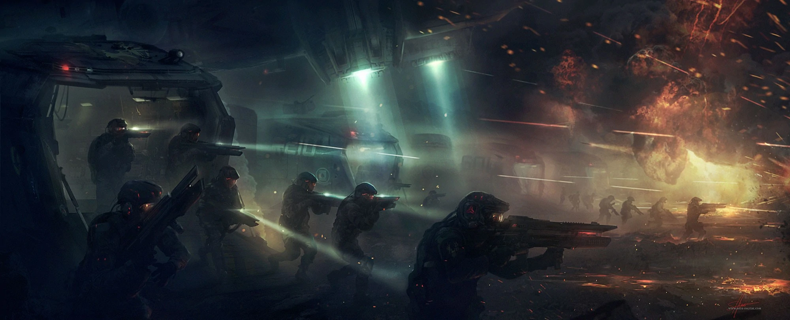

Welcome to my portfolio project for CS! In this website, I shall be chronicling three centuries of gameplay
in one of my favorite games called "Stellaris" that allows to take control of an interstellar nation. In the above video is
the launch trailer of Stellaris from 5 years ago to hopefully add context and give newcomers a gist of what's to come. This portfolio
will include about five centuries worth of history for a fictional empire that I played in my Stellaris game with the first segment
being a short prologue to introduce you to my nation's history. While this is not a traditional portfolio, I hope you have a fun as I have
had writing this entire history and short embellishments about the politics and lore of this purely fictional nation written in the perspective
of a weary survivor
The 22nd Century: Nuclear War and Unification

Here in the 22nd Century lay the ashes of the Old World from which the Third World War had set alight across the Earth.
Humanity had fallen due to their hubris and in this time, warlords and miltias would arise in the place of government and nations.
In this time, a young faction called the HTG or the Human Terran Government would form from whatever remnants of the great armies
before would rise to the top. Through a series of wars for the unification of Earth and it's peoples, the HTG would come out as the
sole ruling faction of the planet. After a few decades of rebuilding and renewed hope for Humanity, the HTG would set their eyes
upon the stars to look for a new home and with the invention of Clasen-Dawn drive; it would seem that humanity would finally
escape their sins of the past for a brighter future.
The 23nd Century: The First Century of Gameplay
The 22nd Century would see the First Age of Expansion of many throughout the reign of the HTG. With the launch of the first
Clasen-Dawn drive equipped science ship, humanity would finally set foot on the many worlds of the galaxy and find new homes.
In the following years to follow the launch of the HTG Modeus, production of construction ships, more science ships, and multiple
colony ships to survey, build, and inhabit infastructure across HTG space would increase exponentially allowing for the HTG to expand to modest amount of
star systems under their control by halfway through the century with dozens more at hand. Colonies throughout this space would be
be settled upon verdant garden worlds with environments suitable for human life but with these settlements came the answer to one of
humanity's great questions; we were not alone. These garden worlds would come the discovery of non-sapient extraterrestrial life and the
classified discovery of ancient ruins thus coming into question "What would we do when we find sapient alien life?"
The 24th Century: War with The Primitives
With ever increasing expansion of humanity underway across the galaxy, it was bound to happen soon enough with the first discovery of
sapient alien life all across the expanding borders of the HTG. Despite the technology level of these aliens being quite primitive in
comparison to humanity with all of them being before the invention of advanced spaceflight. This discovery would rock HTG society to it's core
with the leak of classified documents of ancient alien ruins bringing massive upheaval across the interstellar nation with multiple colonies starting
to rebel against HTG control forcing military intervention on some occasions. The first half of this century would see turmoil across the HTG as officials
discussed and debated about the policy of dealing with these primitives. In the end, humanity would expand around those primitives leaving them in isolation
with certain exceptions being under closer observation with their atomic age techonology level. This would inevitably change by the end of century with the demand
of resources across the HTG and lacking garden worlds in close reach of nearby shipyards would see a slew of campaigns for the forced eviction and intergration
of these xenos into HTG control.
These campaigns would see four new primitive species subjagated into HTG control by military force to the galactic south of the HTG. An outlier to one of these
species would be an atomic age world from which was on the brink of nuclear annihilation before the HTG invaded and seized control of assets in the system. Observation posts
would be used as staging grounds across these campaigns with assets pertaining to infiltration used to their fullest extent to undermine native retaliation against HTG occupation.
These skirmishes would test the HTG armies in this new age of spaceflight and brought to light new tactics and doctrines to be used in this new era.
The 25th Century: Spaceflight Primitives and The Colossus
Intergration of these new xenos would see massive societal shifts in the political landscape of the HTG by the turn of the century with
xenophobic tendancies across humanity reaching an ever-increasing high that would lead to an event called "The Purge" wherein multiple colonies
of the HTG would start exterminating these new xenos citizenry upon their grounds on levels like the Holocaust. This massive extermination campaign would soon stop with the intervention of
the military and tightened control on farther reach colonies. further historical discussion on the topic would see this event as a tragedy and be further example on the worst of humanity but
it would not be the first of blood to be shed during this century. During this time, development of a neutron sweep planetary weapon would occur allowing for the
scouring of an entire planet of any complex life but leaving basic bacteria and algae alive allowing for future colonization. Main reasoning for a weapon of this
scale would be brought about by the discovery and diplomacy between two new-found spaceflight capable species to the galactic north of the HTG and within
their holdings a number of verdant garden worlds. This discovery would be classified during this period with "The Purge" and the societal upheavals that such
information would cause would create disorder and chaos that the HTG could not handle at the time.
Midway through the century with the calming of the massive societal upheavals, the HTG would finally unveil the discovery of these spaceflight
capable primitives to the public. In a stark change of the first discovery of sapient life, humanity would accompany such a discovery with celebration
and hesitation across the HTG. These two species in comparison to the HTG would be laughable as their technolgies were nearly two centuries
apart in development and usage leaving a great disparity between these new aliens and the HTG. In the following decade of the public dissemination
would see societal mentality towards these primitives being one of early 21st century America of manifest destiny wanting to bring these xenos under
the banner of the HTG. This changing mindset towards these alien empires would see military and economic buildup across the HTG preparing for an eventual
war against one of the species to the galactic northeast of the HTG. This buildup would include the newly developed Colossus and the secret political
agenda of the highest echelons of the HTG of expansion towards those controlled garden worlds finally see fufilled purpose and achievement. With this
sentiment at all time high by the 2480s, war would soon be declared and the Colossus prepared for deployment
The latter end of the century would see push into the center and capital of xenos territory with discovery of a connected wormhole into xenos holdings with 1st Fleet and Colossus establishing
a foothold in the system. Later reinforcements would see Quantum Catapult jumps of the 2nd fleet pushing into the in the south of xenos holdings with army transport as a support.
These taskforces would soon start a consistent disestablishment and conquering of xenos worlds with HTG armies swiftly taking defended colonies with ease as earlier engagements with
rebelling colonies and pre-spaceflight worlds from the last century rattified new doctrines and tactics. Propoganda of Colossus usage against particularly well-defended worlds that could not be
invaded by conventional methods would paint a picture of corrupted xenos scum tainting the planet and only the purifying neutrons of the Colossus would
cleanse the world. After a decade of war, the victor would be the HTG as former xenos colonies and territory would come into human control and barren garden worlds
resettled upon and doctrines of fleet combat renewed with the first fleet-to-fleet combat occuring. The following years after the Great Manifest War would see the alienation and increased hostilies from species to the galactic northwest and economic strain
as the new infastructure and colonies brought new burden on the energy grid and resource reserve of the HTG to keep facilities running in the newly formed sector.
The 26th Century: The Aerophasic Engine
To first talk about the 26th Century would be to further discuss about the Aerophasic Engine and The Gateway Network. Unbeknownst to most of the public at this time, the HTG had
activated the gateway artifact in HTG space and had been exploring the expanse beyond it and further expanding into it throughout the 24th and 25th century before.
This gateway would lead to an extra-galactic expanse of space littered with hyper-advanced alien ruins and a gateway that would lead to other gateways in the galaxy.
Further explorations through the Gateway Network would see further mining stations and research stations formed on the eastern galactic arm away from public eye with the
lack of garden worlds and surplus of native anomalies hindering expansion across the galactic arm but most important of them all would be the advanced Psionic Enclave of aliens
that lived upon this arm. Classified like most eastern galactic arm business, these new aliens would bring to light the science of the shroud and psionics to humanity and the HTG.
This knowledge of the shroud would see renewed interest in the ancient alien ruins that scattered HTG space seeing new research and perspective brought about by the information given
by the Psionic Enclave. Archeology sites would be turned over and fully excavated during the 25th Century and after decades of research and archeology would come the invention
or some would say discovery of the Aerophasic Engine; utilizing the psionic energies inherent in dark matter, a species could be turned into a being akin to Gods.
Research into the Aerophasic Engine and it's construction would bring about new ship designs to brought about in the doctrines of the HTG fleets utilizing efficent
durable alloys and minerals that could bring about the payload of a standard warship in a lighter and faster design. This new alloy developed from the plans of the Aerophasic Engine would
soon be deployed across HTG space in civillian, military, and production industries. With this massive gear shift in economics and resources, the HTG would finally start anew plans towards
construction of the Aerophasic Engine and becoming Gods. This leap in research in both science and applied techology would soon further advance hostilites between the HTG and the species to the
northwest of the HTG. These hostilities would soon bring about the xenophobic tendancies of both sides to new level with HTG society coming to a sentiment of war once more willing to
bring death and destruction to these primitives to teach them lesson about respecting their betters. Sentiment between both species would reach levels of aggression and violent disagreement, protests, and riots across
embassies leading to isolation and closure of borders of both parties from the other. In a close parallel to the Great Manifest War, development of a Star-Eater weapon would be commenced and finished
allowing for the harvesting of dark matter from the core of stars destroying the star in question and it's surrounding planets. War was on the horizon and with this new weapon in the arsenal of the HTG and
the development of the Aerophasic Engine requiring dark matter; war would be declared midway through the century.
Buildup in both military power with the construction of a mobile shipyard warship titled the "Juggernaut" and deployment of Star-Eater superweapons into the borders of xenos holdings
would mark the beginning of "The Great Extermination". Quantum Catapult jumps behind enemy borders by the 1st Fleet securing frontier outposts soon reinforced by a push
from the Juggernaut and Superweapon Task Force consisting of the Colossus and Star-Eater weapons would soon wipe out the western holdings of the xenos empire. Alien colonies would be
occupied if considered suffciently conquerable by the supporting regiments of HTG armies in transport ships with the well-defended inner-colonies of the xenos empire left to the whims
of both neutron sweeping of the Colossus and system annhilation of the Star-Eater. A slow consistent push into xenos space exterminating all signs of xenos infastructure and occupying all
sufficently undefended colonies bringing them under HTG control. After a five year campaign of extermination, HTG Fleets blockaded the home system of the xenos empire leaving their capital and homeworld
the last holdings of the horrid xenos empire. Six months, the fleets had blockaded the system isolating the alien menace before the Star-Eater HTG Hades entered the system and ended "The Great Extermination".
Without any immediate threats to the supremacy of the Human Terran Government, the Aerophasic Engine would be built upon the first star that humanity grew upon.
The construction of the Aerophasic Engine required more dark matter than what was accumalated in "The Great Extermination" thus expeditions across the wild frontiers of
galactic south and galactic northeast would be launched expanding the borders of the HTG and harvesting dozens of stars for the Aerophasic Engine. During an expedition
to the galactic south arm, a navigation anomaly on the Clasen-Dawn Jumpdrive would see the discovery of a extragalactic observation system. The Expedition Fleet would
soon jump towards the system and investigate the anomaly coming into quick conflict with the defensive fleet severely damaging the Expedition Fleet but was soon wiped out.
The data from such an anomaly or what was discovered during such detour was never divulged with the public and was only shared to the higher echelons of office, not even I, the Great Survivor
do not know what happened in that system but what is known is that it scared the HTG. Construction of the Aerophasic Engine was hastened and fastened after information of the anomaly
was shared leaving tears between the shroud and reality itself allowing Psionic entities of great power to come into being. Numerous skirmishes between HTG fleets and these Psionic Entities would
mark the final pages of Aerophasic Engine construction with small occurances of piracy snuffled. Though finally after almost a century of construction, the Aerophasic Engine would be finished and
it would all finally end. The Aerophasic Engine was ignited and thousands of stars across the galaxy burst with Psionic Energy leaving a galaxy of blackholes, planets were cracked with pure energy
leaving only a single shrouded world in the graveyard of dead husks where I am spending my last days. What happened to my species is not known but what was left is, leaving a galaxy of dead stars
and planets. Did they become Gods? or Did they just kill themselves and the galaxy for nothing? It is not known and I fear knowing the answer would only drive me mad.